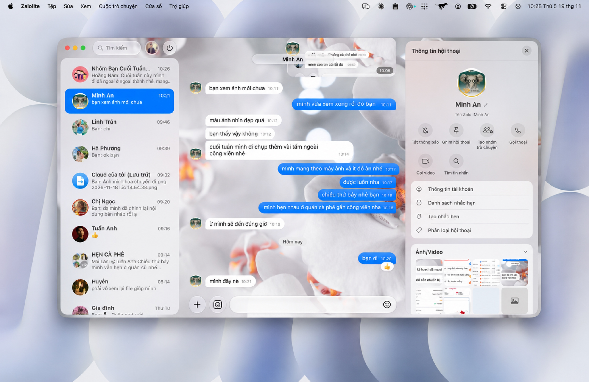
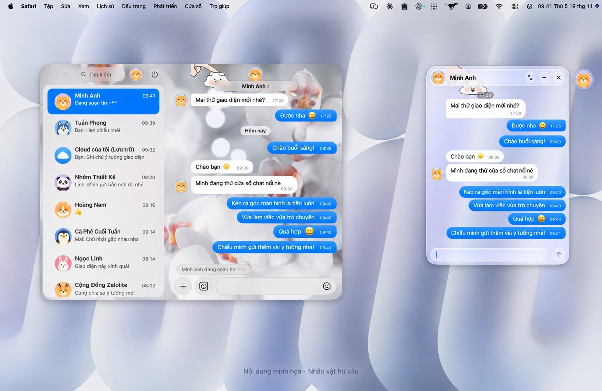
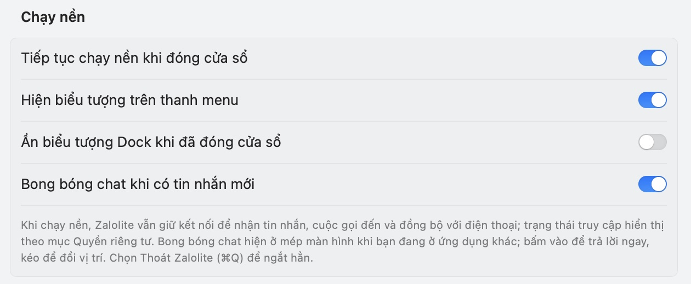
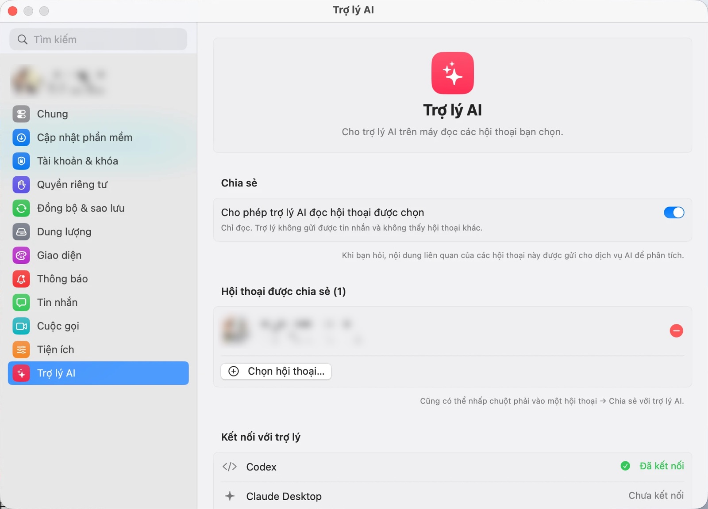
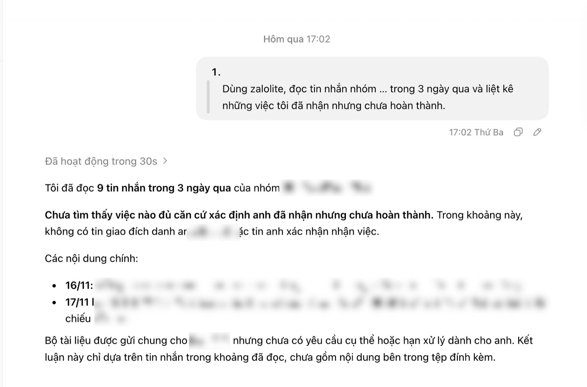
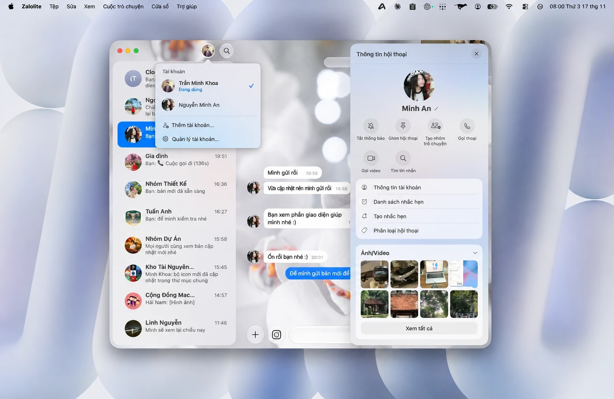
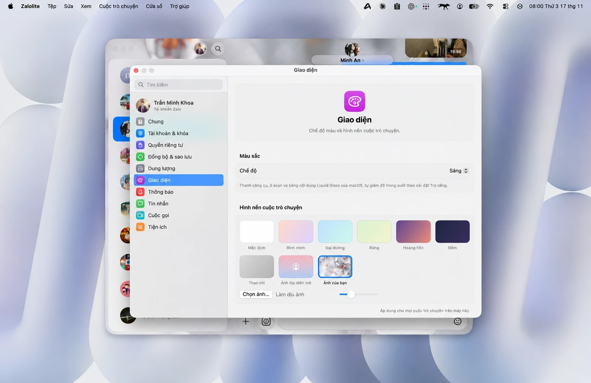

Dành riêng cho macOS · Miễn phí · Mã nguồn mở
Zalo trên Mac,
gọn như ứng dụng
của Mac.
Những cuộc trò chuyện quen thuộc, trong một giao diện đúng chất Mac. Nhỏ gọn, hỗ trợ nhiều tài khoản và lưu lịch sử ngay trên máy bạn.

Gọn hơn.
Khoảng 11 lần.
Zalolite dùng SwiftUI, AppKit và lõi Rust thay cho một trình duyệt nhúng. Dung lượng sau cài đặt khoảng 67 MB, để dành chỗ cho những việc khác.
So sánh dung lượng sau cài đặt trên cùng một máy Mac với Zalo PC 26.11.10. Số liệu làm tròn; không phải phép đo RAM hay tốc độ.
Quen với Zalo.
Hợp với Mac.
Từ một cái chạm Touch ID đến cách bạn chuyển tài khoản, những chi tiết nhỏ làm nên trải nghiệm.
Giao diện của chính macOS
Liquid Glass trên macOS 26, tự theo chế độ sáng tối, thanh menu, thông báo hệ thống và số chưa đọc trên Dock.
Khóa nhanh, mở bằng Touch ID
Một nút khóa cả ứng dụng, đặt ảnh riêng cho màn hình khóa. Hội thoại ẩn cũng mở bằng vân tay, không cần mã PIN.
Nhiều tài khoản một cửa sổ
Chuyển tài khoản ngay từ ảnh đại diện trên thanh công cụ. Dữ liệu từng tài khoản được tách riêng.
Hình nền cho từng cuộc trò chuyện
Chọn màu có sẵn, ảnh đại diện làm mờ hoặc ảnh của bạn, kèm thanh làm dịu để chữ luôn dễ đọc.
Dữ liệu ở lại trên máy bạn
Phiên đăng nhập và lịch sử lưu trên Mac của bạn. Không máy chủ trung gian, không thu thập dữ liệu.
Mang lịch sử theo, tự cập nhật
Nhập bản sao lưu Zalo PC, đồng bộ tin từ điện thoại. Bản mới tải sẵn trong ứng dụng; bạn chọn khởi động lại ngay hoặc để sau.
Trợ lý AI đọc tin giúp bạn
Cho Codex hoặc Claude đọc những hội thoại bạn chọn để tóm tắt, tìm việc còn dở. Chỉ đọc, tắt theo mặc định.
Ưu tiên và Khác như Zalo
Tách hội thoại thành hai tab, đồng bộ với Zalo trên điện thoại. Bật khi cần trong Cài đặt → Tin nhắn.
Chữ to nhỏ tùy mắt
Chọn cỡ chữ tin nhắn Nhỏ, Vừa, Lớn hoặc Rất lớn; áp dụng ngay cho bong bóng, trích dẫn và ô soạn tin.
Mới trong 0.0.17
Trả lời ngay,
không rời việc đang làm.
Đang ở trình duyệt hay ứng dụng khác mà có tin mới, người gửi hiện thành một bong bóng ở mép màn hình. Bấm vào là có khung chat nhỏ để trả lời, xong việc thì thu gọn lại.
- Biết ngay ai nhắn. Bong bóng nhún nhẹ, hiện số tin chưa đọc và một dòng xem trước tin mới.
- Đặt đâu cũng được. Kéo cột bong bóng sang mép trái hoặc phải; Zalolite nhớ vị trí.
- Không làm phiền khi đang ở Zalolite. Bong bóng tự ẩn khi cửa sổ chính ở trước mặt; tắt hẳn trong Cài đặt → Chung.


Mới trong 0.0.15
Hỏi AI về
tin nhắn của bạn.
Cho Codex hoặc Claude trên máy đọc những hội thoại bạn chọn, rồi hỏi như hỏi một trợ lý: việc nào còn dở, ai đang chờ bạn trả lời, nhóm đã chốt gì.
- Tắt theo mặc định. Không có gì được đọc cho tới khi bạn bật và chọn hội thoại.
- Chỉ đọc. Trợ lý không gửi, xóa hay sửa được tin nhắn, và không thấy hội thoại khác.
- Không cần API key. Dùng ngay trợ lý bạn đang có: Codex, Claude Code hoặc Claude Desktop.


Nhìn gần hơn một chút.
Giao diện thật. Tùy chỉnh theo cách bạn làm việc và trò chuyện.


Kéo thả.
Quét mã. Trò chuyện.
- Tải bộ cài bằng nút ở đầu trang. Một file chạy trên cả Mac Apple Silicon và Mac Intel.
- Mở file DMG rồi kéo Zalolite vào thư mục Applications.
- Mở Zalolite và quét mã QR bằng ứng dụng Zalo trên điện thoại.
macOS chặn lần mở đầu?
Zalolite chưa được Apple notarize. Sau khi kiểm tra mã SHA-256 của bộ cài, vào System Settings → Privacy & Security → Open Anyway để cho phép mở lần đầu.
Muốn chắc file không bị thay đổi?
So mã SHA-256 của file tải về với SHA256SUMS.txt trong trang phát hành.
Yêu cầu
macOS 14 Sonoma trở lên. Máy dùng macOS 13 Ventura tải bản riêng cho macOS 13. Hiệu ứng Liquid Glass cần macOS 26.
Để cuộc trò chuyện tiếp tục.
Miễn phí, mã nguồn mở và dành riêng cho chiếc Mac của bạn.